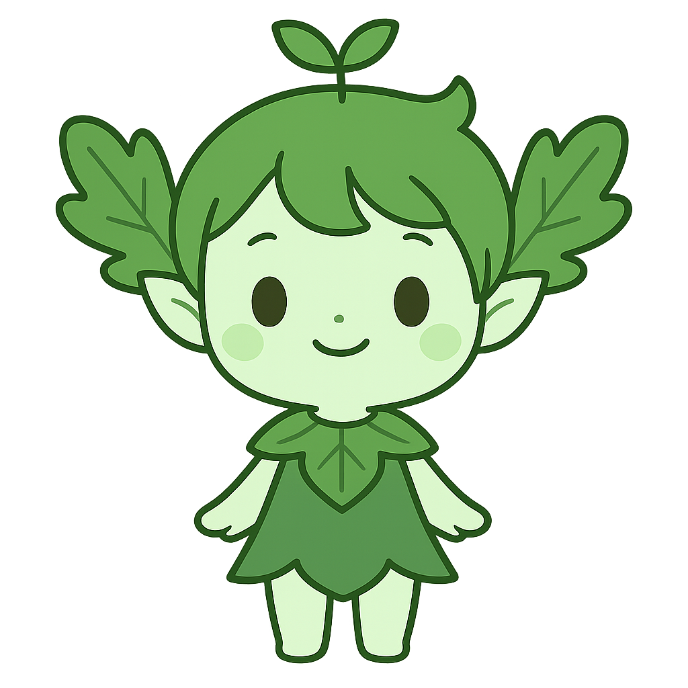

EcoSprite 🌿
💬
聊天
📷
拍照识别
🚶
绿色出行
🎀
衣柜
💾
数据

...
‹
聊天室
发送
‹
“绿色”扫描仪
快拍下你身边的物品，看看它是否“绿色”！
(这里假装是摄像头...)
(在Demo中，我们用按钮来“模拟”识别结果！)
📷 模拟“可回收物”
📷 模拟“不可回收”
‹
绿色出行
你今天是不是走路或骑车来上学啦？
快来“打卡”吧！
🚶 我今天“绿色出行”啦！
‹
我的衣柜
（这里是我们的换装界面...）
‹
数据保险箱
导出存档 (Export)
导入存档 (Import)
欢迎来到 EcoSprite 的世界！
你好像是第一次来，我们来认识一下吧！
你想让你的小精灵怎么称呼你？
你想给你的小精灵起个什么名字？
领养它！